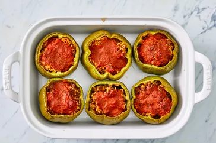

Stuffed Peppers

Stuffed peppers with ground beef and rice are topped with a seasoned tomato sauce.
You can fill and roll the enchiladas the day before you plan to serve them to save time. Cover the baking dish tightly with storage wrap or aluminum foil and store in the fridge. About half an hour before you’re ready to eat, top them with taco sauce and cheese before baking according to the recipe.
Ingredients:
- 6 medium green bell peppers
- 1 pound ground beef
- 1 tablespoon vegetable oil
- salt and ground black pepper to taste
- 1 teaspoon Italian seasoning
- 1 cup cold water
- 1 tablespoon Worcestershire sauce
Steps:
- Gather all ingredients, and preheat the oven to 350 degrees F (175 degrees C).
- Bring water and rice to a boil in a covered saucepan. Reduce heat to low and simmer until rice is tender, about 20 minutes.
- Meanwhile, heat oil in a skillet over medium heat. Add ground beef and cook until evenly browned and crumbly, 7 to 9 minutes.
- Hollow out bell peppers by removing and discarding the tops, seeds, and membranes. Slice the bottoms of the peppers if necessary to make sure they stand up straight.
- Arrange peppers in a baking dish with the hollowed sides facing upward.
- Prepare filling by mixing cooked beef, cooked rice, 1/2 of the tomato sauce, Worcestershire sauce, garlic powder, onion powder, salt, and pepper. Spoon an equal amount of filling into each hollowed pepper.
- Mix remaining tomato sauce and Italian seasoning in a bowl, and pour over the stuffed peppers.
- Bake in the preheated oven, basting with sauce every 15 minutes, until peppers are tender, about 1 hour.
- Serve hot and enjoy!